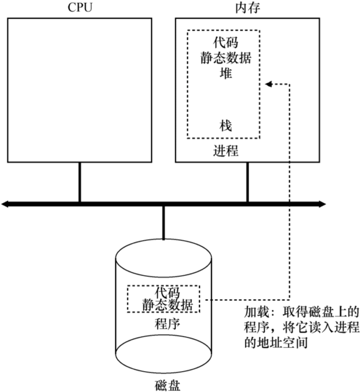
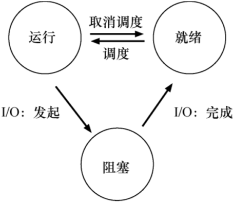
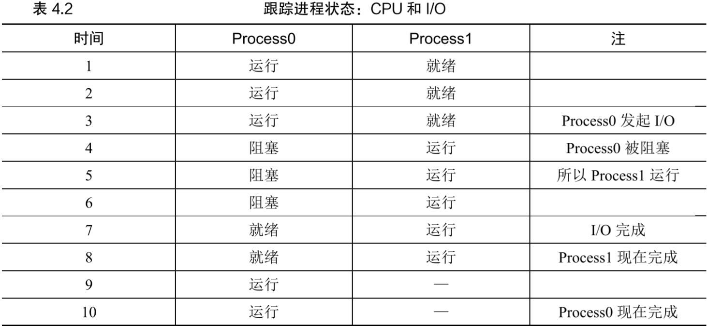

OSTEP第4章 抽象：进程
文章目录
- 进程就是运行中的程序
时分共享(time sharing)：让一个进程只运行一个时间片，然后切换到其他进程，操作系统提供了存在多个虚拟cpu的假象机制：实现所需功能的低级方法或协议，如上下文切换策略：操作系统内做出某种决定的高级算法
抽象：进程
机器状态：程序在运行时可读取或更新的内容- 内存：进程可访问的内存（地址空间）是进程的一部分
- 寄存器：很多指令读写寄存器
- 特殊寄存器：
程序计数器(PC)指向当前执行的指令，栈指针(SP)和帧指针(FP)管理函数参数栈、局部变量、返回地址
- 特殊寄存器：
- 模块化：将高级策略和低级机制分开
- 机制回答“how”的问题，如上下文切换
- 策略回答“whici”的问题，如进程调度
进程API
- OS的进程API必须包含：
- 创建：创建新进程（如shell中输入命令、图形界面中双击图标）
- 销毁：强制销毁进程
- 等待：等待进程停止
- 其他控制：杀死、等待、暂停、恢复等
- 状态：运行了多久、处于什么状态
进程创建：更多细节
- 如何启动并运行一个程序：
- 加载数据：
- 需要加载的包括代码和静态数据（初始化变量等），从硬盘读取，放到内存中该进程的地址空间中
- 早期操作系统中，加载过程应在运行程序前全部完成。现代操作系统使用
惰性加载：利用分页/交换机制，仅在执行期间加载那些需要的代码/数据片段
- 分配堆栈：
- 为
运行时栈分配内存，可能还会用argc和argv参数初始化栈 - 可能为
堆分配内存，堆用于显式请求的动态数据，通过malloc/free来分配/释放
- 为
- IO设置：
- unix系统中，默认每个进程都打开3个
文件描述符：标准输入、标准输出、标准错误
- unix系统中，默认每个进程都打开3个
- 启动程序：在入口(main)处运行，将cpu控制权交给创建的进程
- 加载数据：
- 加载的过程如图4.1 
进程状态
- 进程3种状态：
运行：cpu正在执行它的指令就绪：进程已准备好运行，但OS选择不在此时运行阻塞：进程执行了某种操作，直到发生其他事件时才会就绪。例如发起IO请求时会被阻塞，直到IO操作结束
- 状态转移：
- 从就绪到运行是已被调度
- 从运行到就绪是被取消调度
- 进程被阻塞时OS将维持状态直到发生某件事，此时进程转入就绪
- 状态转移如图4.2 
- 例子：两个进程之间的状态转移如表4.2 
数据结构
- OS使用数据结构跟踪各种相关信息，如进程列表等
上下文切换：进程停止时，它的寄存器被保存到内存中，通过恢复这些寄存器（从内存中放回寄存器）OS可恢复运行该进程- 例子：xv6的proc结构
|
|
- 如上，操作系统追踪进程的一些关键信息。
- 除运行、就绪、阻塞外，还有其他状态：
初始(initial)状态：进程正在创建时的状态最终(final)状态：进程已退出但尚未清理，该状态允许其他进程检查它的返回代码来判断它是否成功执行。子进程执行完成后其父进程进行最后一次调用（如wait()）等待子进程结束，并告知OS可清理子进程
- 存储关于进程信息的结构又叫
进程控制块(Process Control Block,PCB)
小结
略